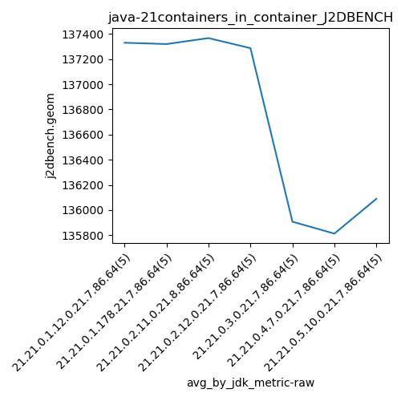

java-21 J2DBENCH
Context at bottom
/home/jvanek/git/benchmarks-in-nested-virtualisation-toolchain/final_results/containers_in_container_results/containers_in_container_DACAPO
java-21
J2DBENCH
/home/jvanek/git/benchmarks-in-nested-virtualisation-toolchain/final_results/containers_in_container_results/containers_in_container_JMH
java-21
J2DBENCH
/home/jvanek/git/benchmarks-in-nested-virtualisation-toolchain/final_results/containers_in_container_results/containers_in_container_SPECJBB
java-21
J2DBENCH
/home/jvanek/git/benchmarks-in-nested-virtualisation-toolchain/final_results/containers_in_container_results/containers_in_container_RADARGUNs1
java-21
J2DBENCH
/home/jvanek/git/benchmarks-in-nested-virtualisation-toolchain/final_results/containers_in_container_results/containers_in_container_J2DBENCH
java-21
J2DBENCH
containers_in_container_J2DBENCH
final score
Expected number of java-21 JDKs: 7
1st avgmed_alljdks_metric:
/home/jvanek/git/benchmarks-in-nested-virtualisation-toolchain/final_results/result_processing.py /home/jvanek/git/benchmarks-in-nested-virtualisation-toolchain/final_results/containers_in_container_results/containers_in_container_J2DBENCH j2dbench.geom False
values: [137406, 137339, 137309, 137338, 137256, 137278, 137326, 137331, 137391, 137270, 137451, 137371, 137230, 137333, 137447, 137359, 137320, 137416, 137296, 137041, 135849, 136033, 135943, 135798, 135913, 135729, 135825, 135834, 135824, 135851, 136148, 136183, 136038, 136012, 136065]

Expected number of iterations: 5
final number of values: 35 out of 35
Pass rate: 100.0%
values: (135729, 137451, 136730.08571428573, 137256)

** accuracy from all jdks and runs
more is better
MIN: 135729
MAX: 137451
AVG: 136730.08571428573
MED: 137256
Relative differences 1:
MIN-MAX: 1.0 %
MIN-AVG: 1.0 %
MIN-MED: 1.0 %
MAX-MIN: -1.0 %
MAX-AVG: -1.0 %
MAX-MED: -0.0 %
AVG-MED: 0.0 %
stored to java-21.properties. sort | uniq that!
2nd avgmed_by_jdk_metric:
values: [137329.6, 137319.2, 137366.4, 137286.4, 135907.2, 135812.6, 136089.2]

values: [137338, 137326, 137371, 137320, 135913, 135825, 136065]
values: (135812.6, 137366.4, 136730.08571428573, 137286.4)
values: (135825, 137371, 136736.85714285713, 137320)

** accuracy from all jdks where runs were avged
more is better
MIN: 135812.6
MAX: 137366.4
AVG: 136730.08571428573
MED: 137286.4
Relative differences 1:
MIN-MAX: 1.0 %
MIN-AVG: 1.0 %
MIN-MED: 1.0 %
MAX-MIN: -1.0 %
MAX-AVG: -0.0 %
MAX-MED: -0.0 %
AVG-MED: 0.0 %
stored to java-21.properties. sort | uniq that!
** accuracy from all jdks where runs were medianed
more is better
MIN: 135825
MAX: 137371
AVG: 136736.85714285713
MED: 137320
Relative differences 1:
MIN-MAX: 1.0 %
MIN-AVG: 1.0 %
MIN-MED: 1.0 %
MAX-MIN: -1.0 %
MAX-AVG: -0.0 %
MAX-MED: -0.0 %
AVG-MED: 0.0 %
stored to java-21.properties. sort | uniq that!
/home/jvanek/git/benchmarks-in-nested-virtualisation-toolchain/final_results/containers_in_container_results/containers_in_container_RADARGUNs3
java-21
J2DBENCH
pass rates:
containers_in_container_J2DBENCH=100.0%
Context:
- containers_in_container_results
- J2DBENCH